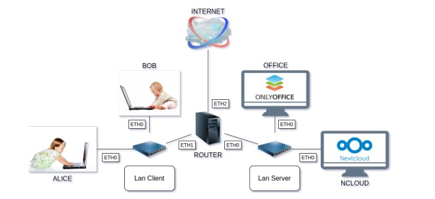

NEmu
Cahier des Charges
- Installation et configuration d'un serveur Nextcloud et Onlyoffice
- - Relier deux postes de travail, un routeur, le serveur Nextcould et Onlyoffice
- - Configuration des machines virtuelles
- - Creation d'un tutoriel en anglais

Methodes Choisies
- - Utilisation de la technologie NEmu
- - Configuration d'un routeur
- - Installations de serveurs grace a la documentation
- - Documentation de tous les procedes eN MarkDown en anglais
Mes competences
- - Creer un reseau de machines virtuelles avec NEmu
- - Savoir utiliser le MarkDown
- - Epliciter des procedes technique en anglais